A Learner’s Guide to Regular Expressions
Welcome to the world of Regular Expressions (RE) in the Theory of Computation (TOC)! This guide is designed to be your friendly handbook, breaking down complex ideas into simple, understandable pieces.
Concept
What is a Regular Expression?
A Regular Expression is a sequence of characters that specifies a search pattern. In TOC, it’s a formal way to describe a Regular Language—a set of strings that can be recognized by a Finite Automaton. Think of it as an algebraic formula for defining patterns in text.
1. The Core Concepts
Before we build complex expressions, let’s understand the building blocks.
- Alphabet (\(\Sigma\))
A finite, non-empty set of symbols. For example, \(\Sigma = \{a, b\}\) or \(\Sigma = \{0, 1\}\).
- Empty String (\(\epsilon\))
A string with zero characters. It’s a valid string in many languages.
- Empty Set (\(\emptyset\))
Represents a language with no strings at all. It is different from the language containing only the empty string, \(\{\epsilon\}\).
- Operators
Regular Expressions use three primary operators to combine symbols:
Union (+): Represents an “OR” condition. \(a+b\) means either ‘a’ or ‘b’.
Concatenation (.): Joins characters or expressions sequentially. \(a \cdot b\) (or simply \(ab\)) means ‘a’ followed by ‘b’.
Kleene Star (*): Represents “zero or more” occurrences of the preceding character or group. \(a^*\) means \(\{\epsilon, a, aa, aaa, ...\}\).
Warning
Don’t confuse the empty string \(\epsilon\) with the empty set \(\emptyset\). \(\epsilon\) is a string, whereas \(\emptyset\) represents a language with no strings.
2. Worked Examples
Let’s see these concepts in action!
Example 1: Language of strings ending with ‘ab’
Regular Expression: \((a+b)^*ab\)
Intuitive Explanation: - \((a+b)^*\): This part means “any combination of ‘a’s and ‘b’s, of any length (including zero).” This allows the string to start with anything. - \(ab\): This part forces the string to end with the exact sequence ‘ab’.
Sample Strings: \(ab\), \(aab\), \(bab\), \(aaaaab\), \(bbabab\)
Visual Diagram (NFA):
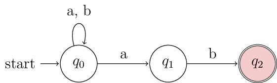
Caption: This NFA accepts any string that ends in ‘ab’. It stays in q0 for any character, moves to q1 on ‘a’, and finally to the accepting state q2 on ‘b’.
3. Complete Pattern Collection
Basic Patterns
Pattern 1: Simple Concatenation
Regular Expression: \(ab\)
Language: Exactly the string “ab”
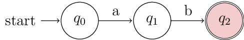
Pattern 2: Star with Concatenation
Regular Expression: \(ab^*c\)
Language: Strings starting with ‘a’, followed by zero or more ‘b’s, ending with ‘c’
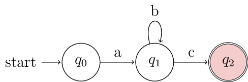
Pattern 3: Group Repetition
Regular Expression: \((ab)^*\)
Language: Zero or more repetitions of “ab”
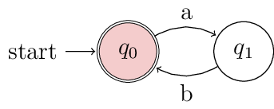
Pattern 4: Prefix with Group Repetition
Regular Expression: \(a(ba)^*\)
Language: Starts with ‘a’, then zero or more repetitions of “ba”
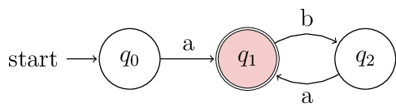
Complex Patterns
Pattern 5: Union with Star
Regular Expression: \((a + bc)^*\)
Language: Zero or more repetitions of either ‘a’ or “bc”
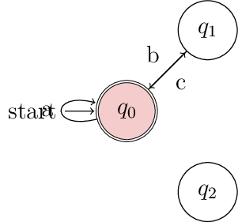
Pattern 6: Prefix with Union Loop
Regular Expression: \(a(b + a)^*\)
Language: Starts with ‘a’, then zero or more of either ‘a’ or ‘b’
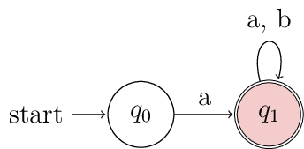
Pattern 7: Complex Nested Expression
Regular Expression: \(a^*b(c + da^*b)^*\)
Language: Zero or more ‘a’s, then ‘b’, then zero or more of either ‘c’ or “d followed by zero or more ‘a’s then ‘b’”
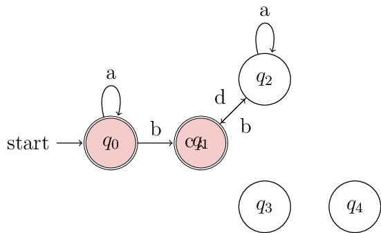
Pattern 8: Union with Kleene Closure
Regular Expression: \((a + bc^*d)^*\)
Language: Zero or more repetitions of either ‘a’ or “b followed by zero or more ‘c’s then ‘d’”
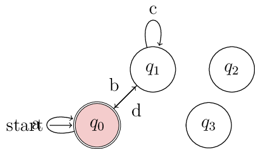
4. Automata Pattern Recognition
Study these automata and identify their corresponding regular expressions:
Practice 1: Three-State Loop Pattern
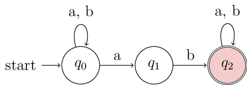
Challenge: What language does this automaton accept?
Practice 2: Epsilon-NFA with Branches
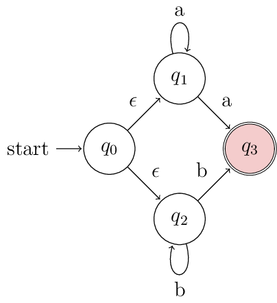
Practice 3: Sequential Pattern
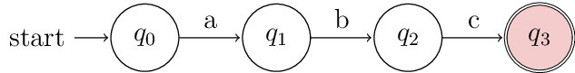
Practice 4: Alternative Paths
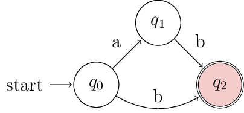
Practice 5: Epsilon Transition Pattern
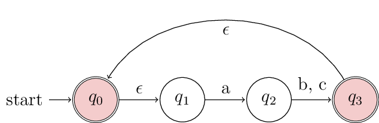
Note: This represents \((a(b+c))^*\)
Practice 6: Parallel Paths NFA
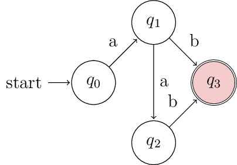
Practice 7: Self-Loop with Transition
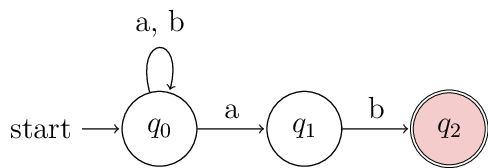
Practice 8: Two-State Loop Machine
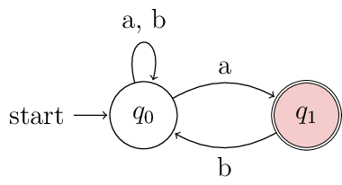
5. Interactive Exercises
Time to test your knowledge! Try to solve these on your own before peeking at the solution.
Exercise 1 (Basic)
Write a Regular Expression for the language of all strings over \(\Sigma = \{a, b\}\) that start with ‘a’ and end with ‘b’.
Hint: Think about what can come in between the first ‘a’ and the last ‘b’. It can be anything!
Solution
Regular Expression: \(a(a+b)^*b\)
Explanation: - The first a ensures the string starts with ‘a’. - The middle :math:`(a+b)^*` allows for any sequence of ‘a’s and ‘b’s (including none). - The final b ensures the string ends with ‘b’. - Sample Strings: \(ab\), \(aab\), \(abb\), \(ababab\)
8. Finite Automata to Regular Expression
Converting finite automata to regular expressions is a fundamental skill in Theory of Computation. Let’s master this through systematic examples and proven techniques.
Conversion Methods
Two Main Approaches:
State Elimination Method: Remove states one by one while preserving the language
Arden’s Theorem: Set up and solve equations for each state
State Elimination Examples
Problem 1: Simple Two-State DFA
Given DFA:
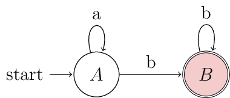
Step-by-Step Solution:
Identify paths: A can loop on ‘a’, transition to B on ‘b’, and B loops on ‘b’
Direct path: From start A to final B requires: any number of ‘a’s, then ‘b’, then any number of ‘b’s
Regular Expression: \(a^*bb^* = a^*b^+\)
Problem 2: Three-State DFA with Multiple Transitions
Given DFA:
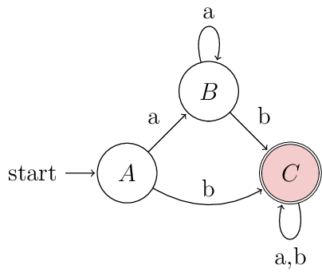
Step-by-Step Solution:
Path Analysis: - Direct path A→C: ‘b’ then any string - Indirect path A→B→C: ‘a’, any number of ‘a’s, ‘b’, then any string
Eliminate intermediate state B: - Effect of A→B→C: \(aa^*b\) - Combined with direct path: \(b + aa^*b = (b + aa^*b)\)
Final state C accepts anything: \((a+b)^*\)
Complete Regular Expression: \((b + a^+b)(a+b)^*\)
Problem 3: Self-Loop Elimination
Given DFA:
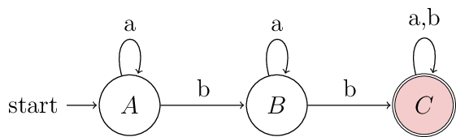
Solution Process:
Handle self-loops first: A has \(a^*\), B has \(a^*\), C has \((a+b)^*\)
Path construction: A→B→C becomes \(a^*ba^*b(a+b)^*\)
Simplify: Since A can also loop, final RE = \(a^*ba^*b(a+b)^*\)
Arden’s Theorem Method
Arden’s Theorem
If X = AX + B and A does not contain ε, then X = A*B
This theorem helps solve equations systematically when converting FA to RE.
Problem 4: Using Arden’s Theorem
Given DFA:
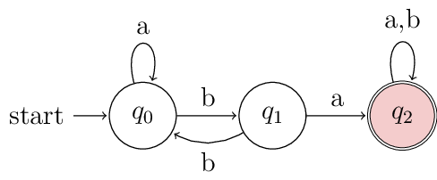
Setting up equations:
\(q_0 = \epsilon + q_0 \cdot a + q_1 \cdot b\) … (1)
\(q_1 = q_0 \cdot b\) … (2)
\(q_2 = q_1 \cdot a + q_2 \cdot (a+b)\) … (3)
Solving step by step:
From equation (3): \(q_2 = q_1 \cdot a \cdot (a+b)^*\)
From equation (2): \(q_1 = q_0 \cdot b\)
Substitute (2) into (1): \(q_0 = \epsilon + q_0 \cdot a + q_0 \cdot b \cdot b\)
Simplify: \(q_0 = \epsilon + q_0(a + b^2)\)
Apply Arden’s: \(q_0 = (a + b^2)^*\)
Find \(q_1\): \(q_1 = (a + b^2)^* \cdot b\)
Find \(q_2\): \(q_2 = (a + b^2)^* \cdot b \cdot a \cdot (a+b)^*\)
Final RE: \((a + b^2)^*ba(a+b)^*\)
Complex Examples
Problem 5: Multiple Final States
Given DFA with two final states:
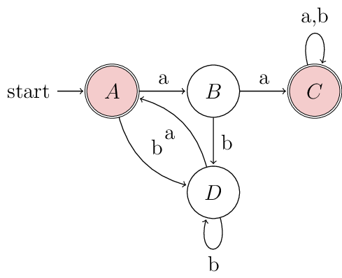
Solution Strategy:
Since there are multiple final states (A and C), we need to find expressions for reaching each:
RE for state A: \(\epsilon + Db^*a\) (including initial acceptance)
RE for state C: Paths ending at C
Combine with union: Final RE = RE(A) + RE(C)
Working through equations: - A = ε + D·b*·a - C = B·a·(a+b)* - B = A·a + D·b*·a·a - D = A·b + B·b + D·b
Final Result: \(\epsilon + (complex\ expression\ for\ paths\ to\ A\ and\ C)\)
Problem 6: Epsilon Transitions
Strategy for ε-NFA to RE:
Remove ε-transitions first by computing ε-closures
Convert to equivalent DFA if needed
Apply standard conversion methods
Key insight: ε-transitions create additional paths that must be accounted for in the final regular expression.
Practice Problems
Exercise Set: Convert these DFAs to Regular Expressions
Problem A: Two-state machine with cross-transitions
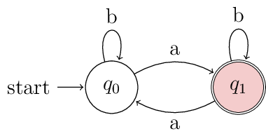
Problem B: Linear three-state chain
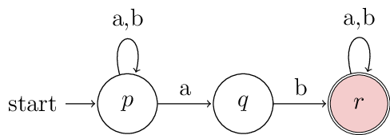
Solutions
Problem A Solution: \(b^*(ab^*ab^*)^*\)
Reasoning: Start in q₀, stay with b’s, then alternate between states with ‘a’, staying in each state with b’s.
Problem B Solution: \((a+b)^*ab(a+b)^*\)
Reasoning: Any string on p, then required ‘ab’ to reach r, then any string on r.
Key Strategies Summary
Method |
When to Use |
|---|---|
State Elimination |
Simple DFAs with few states, clear path structure |
Arden’s Theorem |
Complex DFAs, multiple loops, systematic approach needed |
Direct Construction |
Very simple machines (2-3 states max) |
Hybrid Approach |
Combine methods: eliminate some states, then use equations |
Note
💡 Pro Tips
Common Mistakes to Avoid:
Forgetting self-loops: Always check for and include state self-loops
Missing ε in initial states: If start state is final, include ε in the RE
Incorrect state elimination order: Eliminate non-final, non-initial states first
Union vs. concatenation confusion: Parallel paths = union, sequential paths = concatenation
Verification Method: Construct a few example strings and verify they’re accepted by both the original DFA and your derived RE!
6. Interactive MCQs
Test your understanding with these multiple-choice questions. Click an option to see immediate feedback!
Question 1: Which regular expression defines the language of strings over :math:`\Sigma = \{a, b\}` that contain at least one 'a'?
Question 2: The regular expression :math:`(0+1)^*00` describes what set of strings?
7. Summary & Key Takeaways
Here’s a quick recap of the operators:
Operator |
Symbol |
Meaning |
Example |
|---|---|---|---|
Union |
\(+\) |
OR logic (matches one of the options) |
\(a+b\) (matches ‘a’ or ‘b’) |
Concatenation |
\(\cdot\) (often omitted) |
AND THEN logic (matches in sequence) |
\(ab\) (matches ‘a’ followed by ‘b’) |
Kleene Star |
\(*\) |
Zero or more occurrences |
\(a^*\) (matches \(\epsilon\), ‘a’, ‘aa’, …) |
Note
🚀 Next Steps
Great job! You now understand the fundamentals of Regular Expressions. The next logical step is to explore the powerful connection between REs and Finite Automata (FA). You’ll learn how to:
Convert any Regular Expression into an NFA.
Convert any DFA into a Regular Expression.
This equivalence is a cornerstone of the Theory of Computation!